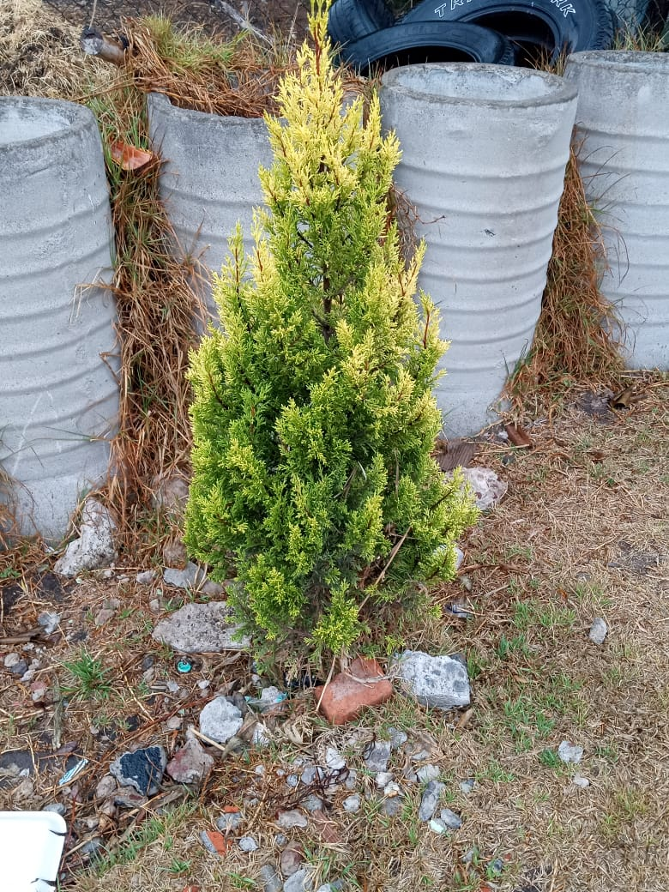

Pagina de reforestación
Pagina de reforestación
Pagina de reforestación
Pagina de reforestación
Beneficios Ambientales de la Reforestación
1. Captura de Carbono:
- Los árboles absorben dióxido de carbono (CO2), un gas de efecto invernadero. Se estima que un solo árbol maduro puede absorber aproximadamente 22 kg de CO2 al año.
2. Biodiversidad:
- La reforestación ayuda a restaurar hábitats para muchas especies animales y vegetales, incrementando así la biodiversidad. La reforestación puede aumentar la biodiversidad en áreas devastadas en hasta un 50%
3. Protección del Suelo:
- Los árboles ayudan a prevenir la erosión del suelo al estabilizarlo con sus raíces. La reforestación puede reducir la erosión del suelo en un 75%, según estudios.
4. Regulación del Ciclo del Agua:
- Los árboles juegan un papel importante en el ciclo hidrológico, favoreciendo la infiltración de agua y la recarga de acuíferos. Se estima que los bosques pueden aumentar la disponibilidad de agua en las cuencas afectadas.
5. Mejora de la Calidad del Aire:
- Los árboles actúan como filtros naturales, eliminando contaminantes del aire y produciendo oxígeno. Según la EPA, un árbol puede absorber hasta 1 tonelada de CO2 durante su vida.
6. Reducción de la Temperatura Urbana:
- La reforestación en áreas urbanas puede reducir las temperaturas en los alrededores, mejorando la calidad de vida y reduciendo el uso de energía en climas cálidos.
Beneficios Educativos de la Reforestación
Concienciación Ambiental:
- Las iniciativas de reforestación suelen incluir programas educativos que enseñan sobre la importancia de los ecosistemas y la conservación.
Desarrollo de Habilidades:
- La participación en proyectos de reforestación puede desarrollar habilidades prácticas en los jóvenes, como el trabajo en equipo, la planificación y el cuidado del medio ambiente.
Responsabilidad Social:
- Fomentar una mentalidad de responsabilidad en las nuevas generaciones sobre el cuidado del medio ambiente puede resultar en ciudadanos más informados y comprometidos.
Investigación y Ciencia:
- Los proyectos de reforestación pueden convertirse en espacios de investigación, donde estudiantes y científicos colaboran para estudiar el impacto de las especies plantadas en el entorno.
Datos y Estadísticas sobre la Reforestación:
Áreas Reforestadas: Según la FAO, la superficie forestal mundial ha aumentado en aproximadamente 1,3 millones de hectáreas anuales desde 1990, gracias a la reforestación y la restauración de bosques. Objetivos de Reforestación: La Iniciativa Bonn y el Acuerdo de París establecen metas para restaurar tierras degradadas, buscando restaurar 350 millones de hectáreas de bosques y ecosistemas degradados para 2030. Impacto Económico: Un estudio del Banco Mundial indica que la reforestación puede generar un retorno económico de $7 por cada dólar invertido a través de la creación de empleos y el fomento del ecoturismo. Iniciativas Globales: La iniciativa “Trillion Tree Campaign” busca plantar mil millones de árboles para ayudar en la lucha contra el cambio climático y restaurar la biodiversidad.
